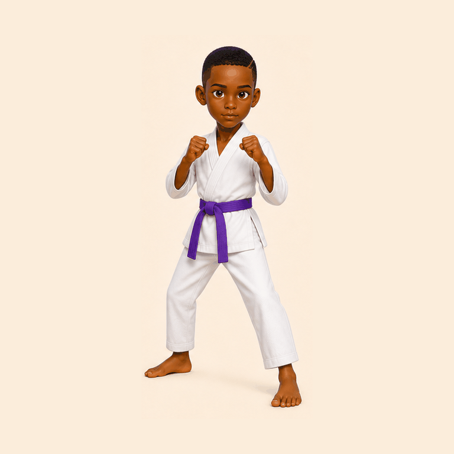

Annyeong ! Prêt à apprendre ?Choisis une position, écoute la prononciation et teste-toi.
🔊 Voix coréenne
Priorité à une voix masculine coréenne si elle est identifiable sur l'appareil.
Mes progrès
La phonétique est volontairement simplifiée pour un francophone. La voix dépend des voix coréennes installées sur l'appareil.